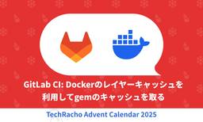

TechRacho
https://techracho.bpsinc.jp
TechRacho（テックラッチョ）は、BPSスタッフがおくるシステム開発＋αのアイデアマガジンです。Ruby on Railsネタ、EPUBの電子書籍ビューワに関連したAndroid/iOS開発ネタが多いです。社内の雰囲気がわかる記事もあるので興味をもってくださる方はぜひご覧ください。
フィード
アラフォーエンジニアは10万歩を目指したい 1
1
TechRacho
秋のPepウォーキングはちゃんとポイントもらえましたか？ 僕は今回、初めてBPS内でチーム結成してみました。インドア派が多いので特に目標は立てず3000歩でも良いかなと思ってましたが、意外とみんな歩いていて、95%まで行きました。こんなことなら最初から100%目指しておけば良かった。 ところで皆さんは1日何歩くらい歩きますか？普段はリモートワークで家から一歩も出ず、歩数が3桁なんて日も珍しくない僕ですが、最高記録は約7万歩です。今回は、ここ1年くらいで気付いたウォーキングの楽しさについて紹介してみたいと思います。 ウォーキングを始めるまで 僕はリモートワークで運動不足が顕著になっていたアラフォー男性なのですが、あ […]The post アラフォーエンジニアは10万歩を目指したい first appeared on TechRacho.
1日前

GitLab CI: Docker のレイヤーキャッシュを利用して gem のキャッシュを取る 1
TechRacho
GitLab CIでDockerを利用して環境を用意する場合に、レイヤーキャッシュとキャッシュマウントを活用してライブラリセットアップの時間を短縮する方法を解説します。 この記事の前提環境 以下の環境を前提としています。 GitLab Runner: Shell Executor。自社のホストマシン上で稼働 環境構築: Docker, Docker Compose。BuildKitが有効 プログラミング言語・フレームワーク: Ruby, Rails また、GitLab Runnerが動いている自社ホストマシン上ではDocker Daemonが稼働しています。 ※ GitLab Runnerが招くセキュリティリスク […]The post GitLab CI: Docker のレイヤーキャッシュを利用して gem のキャッシュを取る first appeared on TechRacho.
2日前
NWスペシャリスト合格体験記 1
TechRacho
cellotakです。 今年のIPA春期試験で高度試験のネットワーク(NW)スペシャリストに合格しました。 2024年, 2025年と2回受験したので、不合格体験も含めて、経験談をまとめます。受験を検討されている方の参考になれば幸いです。 ちなみにその前のDBスペシャリスト試験にも合格しており、その時の体験談も書いているので良ければご覧ください。 DBスペシャリスト合格体験記 1回目の受験 (2024) 勉強開始 2024年の年明けから勉強を開始しました。 業界未経験という形で2023年7月に入社していたので、実務経験はおよそ半年でした。とはいえ当時はRailsの既存コードを少々いじったり画面に要素追加したりする […]The post NWスペシャリスト合格体験記 first appeared on TechRacho.
3日前
インターンシップ実施レポート 東京国際工科専門職大学様（2025年度・3年生） 1
TechRacho
はじめに BPSでは、今秋も東京国際工科専門職大学様からのインターンシップを受け入れました。今回来てもらったのは3年生2名。UさんとYさんで、期間は2025年9月末から11月上旬までの約6週間でした。 今回は、実際の製品開発において、システムの品質担保など顧客価値提供につながる部分を体験してもらう想定で、当初はテスト業務を中心としたカリキュラムを予定していました。ところが二人の習熟が非常に素晴らしく、予定よりも早く進捗したため、後半は実際のコード修正や開発サポートにも挑戦してもらいました。 実際の製品開発工程に携わるということだけでも貴重な経験だったと思いますが、さらに今回、インターンのなかで発見したWebKit […]The post インターンシップ実施レポート 東京国際工科専門職大学様（2025年度・3年生） first appeared on TechRacho.
4日前
Bundler 4.0.0とRubyGems 4.0.0にアップグレードするときの注意点 5
TechRacho
Bundler 4とRubyGems 4は、ユーザービリティ・メンテナンス性・セキュリティを改善するために、非互換な変更を含むさまざまな変更が行われているので、見逃さないために以下を読んでまとめてみました。 参考: Upgrading to RubyGems/Bundler 4 - RubyGems Blog 上の公式ドキュメントに記載されているのは4.0.0の変更だけとは限らず、以前の変更に関連する記述も含まれている点にご注意ください。 利便性のため、上のドキュメントの項目順を重要度の高そうな順に再編成し、可能な限り関連プルリク/コミットも記載しました。 追記 BundlerとRubyGemsのメンテナーである […]The post Bundler 4.0.0とRubyGems 4.0.0にアップグレードするときの注意点 first appeared on TechRacho.
5日前

普通体型から4kg減！ストレスの少ないダイエット法
TechRacho
今回のアドベントカレンダーの雑談テーマが「効果的な運動」ということで、ちょっと枠を広げて「ダイエット」について語ろうと思います。 とはいえ私はもともと「普通体型」ではあったので、余計な脂肪を落とし、足りていなかった栄養素とカロリーをきちんと摂取し、筋肉を付けることを目的としたものです。 結論から言うと、3か月で体重4kg、ウエスト周り6cmの削減に成功しました。 ダイエットのきっかけ …という見出しにしたものの、「ダイエットのきっかけ」って難しいですよね。 小学生のころから「女だから痩せなきゃ」「痩せてる方が勝ち組」みたいな価値観は親や友人、各種メディアから感じていたので、うっすら万年ダイエッターだったというか。 […]The post 普通体型から4kg減！ストレスの少ないダイエット法 first appeared on TechRacho.
8日前
SaaS系サービスの名称をくんシリーズからビヨンドシリーズに刷新しました
TechRacho
こんにちはGenkiです。 私は東京都江東区から石川県能美市に移住し、のんびりスローライフを営んでおります。最近の悩みは、庭の芝が均一に育たないことです。天然芝に詳しい方がいたら、ぜひ相談させてください。 さて、2017年頃に1発目をリリースした「入退くん」を皮切りに、「日報くん」「コマグミくん」、最近では「注文くん」といくつかのクラウドサービスを立ち上げてきたBPSですが、2025年、このタイミングでサービス名を刷新する決断をしました。 すべてのサービス名に「くん」が付いていたことから、社内では通称「くんシリーズ」と呼ばれていました。 親しみやすく、教育・福祉領域との相性も良いのですが、実際に運用する中でいくつ […]The post SaaS系サービスの名称をくんシリーズからビヨンドシリーズに刷新しました first appeared on TechRacho.
9日前
リモートワークで4年間週5以上の運動習慣を続けてきた秘訣
TechRacho
morimorihogeです。11月忙しすぎて記憶があいまい 😇 ソフトウェアエンジニアというと世間的にはNerd的な感じで不健康なイメージがあるかと思いますが、意外とスポーツを趣味にしている人もそれなりに（少なくとも自分の周りでは）観測しています。 一方で、全然運動しない人も結構な割合で見受けられるので、結局のところ職業がどうこうというよりはその人次第だよなと思う今日この頃です。 そんな中、僕も毎年1歳ずつ年を取る中でぼちぼち健康維持を考える歳になりました。 その結果、色々やってみつつ直近4年間は週5以上運動習慣を続けられるようになったので体験談として共有したいと思います。 ※本記事は僕の体験および個人的な経験 […]The post リモートワークで4年間週5以上の運動習慣を続けてきた秘訣 first appeared on TechRacho.
10日前
RubyGems 4.0.0とBundler 4.0.0がリリースされました
TechRacho
gemコマンドでお馴染みのRubyGems 4.0.0がリリースされました。Bundlerも4.0.0がリリースされました。 リリース情報: 4.0.0 Released - RubyGems Blog アップグレードに関する情報（非互換・非推奨化機能など）: Upgrading to RubyGems/Bundler 4 - RubyGems Blog 詳しくは上記情報をご覧ください。さまざまな機能追加・バグ修正・パフォーマンス強化・セキュリティ強化などが行われています。アップグレード情報もチェックしておきましょう。 私的には “Add MAKEFLAGS=-j by default before compil […]The post RubyGems 4.0.0とBundler 4.0.0がリリースされました first appeared on TechRacho.
11日前
IME: azooKeyというかな漢字変換を導入してみました
TechRacho
azooKeyというIMEを導入してみたところ、なかなか快適だったので記事にしてみました。 きっかけ 奥村先生の以下のポストを見かけたことでした。 azooKeyについての雑記（未完）: https://t.co/G29W90pB4v — Haruhiko Okumura (@h_okumura) November 6, 2025 Macのみならず、WindowsやLinuxにも普通にインストールできます（Mac以外は試していませんが）。 インストールと設定 インストールは、上のリポジトリに書いてある通りに行えば、ストンと完了します。 設定画面は、以下のとおりです。 私の場合、デフォルトから変更した設 […]The post IME: azooKeyというかな漢字変換を導入してみました first appeared on TechRacho.
11日前